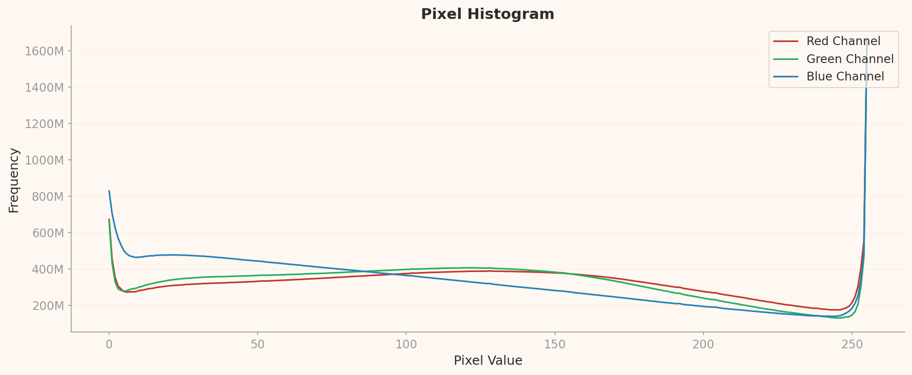

평가 방법론
이 보고서는 DataClinic의 3단계 진단 결과(Level I / II / III)를 ISO/IEC 5259-2:2024 품질측정기준(QM) 프레임으로 재해석한 독립 평가입니다. DataClinic이 측정한 수치와 차트를 각 ISO QM 항목의 정의에 따라 매핑하고, Pass / Fail / 주의를 독자적으로 판정했습니다. 특히, DataClinic이 포착하지 못하는 영역(라벨 정확도, 의미론적 균형)은 학술 문헌(Northcutt et al. 2021)과 공개 클래스 목록을 교차 검증하여 보완했습니다.
요약: ImageNet(ILSVRC)은 2009년부터 딥러닝 혁명의 기반이 된 1,431,167장, 1,000클래스 이미지 데이터셋입니다. 이 보고서는 DataClinic의 60점(보통) 진단 결과를 ISO/IEC 5259-2:2024 품질측정기준(QM)으로 독립 재해석합니다. 12개 QM 항목 중 Fail 5개, 주의 4개, N/A 3개, Pass 0개로 나타났습니다. 120개 개 품종의 의미론적 불균형, L2에서 공작새가 지배하는 대표성 왜곡, Northcutt et al.(2021)이 실증한 약 85,870장의 라벨 오류, 그리고 생물/비생물 특징 공간 편중이 핵심 문제입니다. DataClinic의 60점은 기술적 측면만의 점수이며, 의미론적 품질까지 포함하면 실제 품질은 이보다 상당히 낮습니다.
1 데이터셋 개요
ImageNet은 2009년 프린스턴/스탠퍼드 대학의 페이페이 리(Fei-Fei Li) 교수팀이 구축한 대규모 이미지 인식 데이터셋입니다. WordNet의 어휘 계층 구조를 기반으로 1,000개 시각 카테고리(synset)를 정의하고, 인터넷에서 크롤링한 이미지에 Amazon Mechanical Turk(AMT) 크라우드소싱으로 라벨을 부착했습니다. 2012년 AlexNet이 ImageNet Large Scale Visual Recognition Challenge(ILSVRC)에서 혁신적 성능을 달성한 이후, VGGNet, GoogLeNet, ResNet 등 모든 랜드마크 딥러닝 모델이 이 데이터셋으로 학습 및 검증되었습니다. 사실상 현대 딥러닝의 교과서이자, 전이학습을 통해 수천 개의 후속 모델에 가중치를 전달한 원본 데이터셋입니다.
기본 정보
| 데이터셋명 | ImageNet (ILSVRC) |
| 출처 | ImageNet.org (Princeton/Stanford) |
| 최초 공개 | 2009년 |
| 전체 이미지 수 | 1,431,167장 |
| 클래스 수 | 1,000개 (WordNet synset) |
| 클래스당 평균 | 1,281.2장 (std 70.2) |
| 샘플 범위 | 732 ~ 1,300장 |
| 해상도 | 20×17 ~ 7,056×4,488 px |
| 채널 | RGB 98.43% / Grayscale 1.57% |
| DataClinic 점수 | 60 / 100 (보통) |
의미론적 클래스 분포
| 카테고리 | 클래스 수 | 비율 |
|---|---|---|
| 개 품종 | 120 | 12.0% |
| 기타 동물 (새, 파충류 등) | ~200 | ~20% |
| 식물, 음식, 자연 | ~80 | ~8% |
| 인공물 (도구, 기계, 악기) | ~450 | ~45% |
| 기타 (구조물, 장면 등) | ~150 | ~15% |
* 개 품종 120개가 전체 클래스의 12%를 차지하는 구조적 편향

▵ ImageNet 데이터셋 대표 이미지 콜라주 — 1,000개 클래스의 다양한 시각 카테고리
ImageNet의 1,000개 클래스는 WordNet의 어휘 계층 구조에서 선정되었습니다. 이 선정 과정에서 생물학적 분류 체계가 과도하게 반영되어, 개 품종만 120개가 포함되었습니다. 요크셔 테리어(Yorkshire terrier)와 실키 테리어(silky terrier), 시베리안 허스키(Siberian husky)와 알래스칸 말라뮤트(Alaskan malamute) 등 전문가도 구분하기 어려운 세분류가 다수 포함되어 있습니다. 반면 인간 생활의 핵심 영역인 의료, 교통, 건축 등은 소수 클래스로만 대표됩니다. 이러한 구조는 모델에게 "개 전문가"가 되라고 요구하는 동시에, 나머지 세계는 대충 분류하라고 지시하는 셈입니다.
2 ISO/IEC 5259-2 평가 프레임워크
ISO/IEC 5259-2:2024는 AI/ML 학습용 데이터의 품질을 측정하기 위한 국제 표준입니다. 본 보고서는 DataClinic의 3단계 진단 결과를 이 표준의 품질측정기준(QM)에 매핑하여 독립적으로 판정합니다. DataClinic이 측정할 수 있는 영역과 측정할 수 없는 영역을 명확히 구분하고, 후자에 대해서는 학술 문헌과 공개 데이터를 활용하여 보완 평가합니다.
| DataClinic 진단 단계 | 측정 내용 | 매핑되는 ISO 5259-2 QM |
|---|---|---|
| Level I | 클래스 수, 샘플 수, 결측치, 픽셀 통계, 채널 분포 | Con-ML-2, Bal-ML-1, Eft-ML-1 |
| Level II | Wolfram 1,280차원 임베딩 밀도, 이상치, 유사도 | Rep-ML-1, Sim-ML-2, Div-ML-1 |
| Level III | BLIP 이미지-텍스트 122차원 밀도, 클러스터 분석 | Rep-ML-3, Div-ML-1 |
DataClinic 측정 가능
픽셀 통계, 임베딩 밀도, 이상치, 클래스 분포, 유사도 쌍
DataClinic 측정 불가
라벨 정확도 (6% 오류), 문화적 대표성, 의미론적 균형, PII
판정 기준
Pass 기준 충족
Fail 기준 미달
주의 추가 검토
N/A 현재 미측정
3 내재적 품질 특성 — Con-ML
| QM ID | 항목 | ISO 정의 | 판정 |
|---|---|---|---|
| Con-ML-2 | 픽셀 채널 일관성 | 이미지 채널의 통계적 분포 일관성 | ⚠️ 주의 |
ImageNet은 결측치 0건, 1,431,167장 전체 이미지가 라벨과 정상적으로 매핑되어 있습니다. 형식적 완전성은 양호합니다. 그러나 L1 픽셀 히스토그램에서 주목할 만한 패턴이 발견됩니다. Blue 채널에서 pixel=255 값이 약 16억(1,600M) 빈도로 극단적 스파이크를 보이며, pixel=0에서도 약 8.3억(830M) 빈도로 두 번째 스파이크가 관찰됩니다. 이는 인터넷에서 크롤링한 이미지의 구조적 특성을 반영합니다.

▵ L1 픽셀 히스토그램 — Blue 채널 pixel=255에서 ~1,600M 스파이크, pixel=0에서 ~830M 스파이크 관찰
🔍 비판적 재해석 D2: Blue 채널 255 스파이크 미설명
DataClinic API: "통계: 나쁨" — 구체적 원인 미설명
실제: Blue 채널 pixel=255에 약 16억 픽셀이 집중되어 있습니다. 이는 인터넷에서 크롤링한 이미지에서 하늘과 수면 배경이 과잉 대표되었음을 시사합니다. 파란 하늘이 포함된 야외 사진, 수영장이나 바다 배경의 이미지가 데이터셋에 편향적으로 분포합니다. pixel=0 스파이크(~830M)는 검은 배경, 패딩, 카메라 자동노출 클리핑의 증거입니다. "하늘이 있는 사진"을 과학적 대상으로 인식하게 만드는 이 편향은, 모델이 밝기 극단에 과적합할 위험을 높입니다. DataClinic은 "통계: 나쁨"이라고만 표기했을 뿐, 이 극단적 패턴의 원인과 영향을 설명하지 않습니다.
채널 구성 상세
전체 이미지 중 RGB 98.43%(1,408,698장), Grayscale 1.57%(22,469장)입니다. 1.57%는 비율로는 미미해 보이지만, 절대 수 22,469장의 그레이스케일 이미지가 RGB 이미지와 동일한 파이프라인에서 처리될 경우 학습 품질에 영향을 줄 수 있습니다. 해상도 범위도 20×17에서 7,056×4,488까지 극단적으로 넓어, 리사이즈 과정에서 정보 손실 또는 왜곡이 불가피합니다.
4 균형성 평가 — Bal-ML
| QM ID | 항목 | 측정값 | 판정 |
|---|---|---|---|
| Bal-ML-1 | 클래스 균형 | 수치상 732~1,300 범위, 그러나 의미론적 불균형 | ❌ Fail |
| Bal-ML-2 | 특징 공간 균형 | 렌즈 특성 교차 효과로 순수 측정 불가 | — N/A |
🔍 비판적 재해석 D1: 클래스 균형 "좋음" — 수치의 함정
DataClinic API: "클래스 간 데이터 개수 차이가 적어 정합성과 균형 양호" — 클래스균형: 좋음
실제: 표준편차 70.2, 범위 732~1,300장. 수치적으로 보면 최소 클래스가 최대의 56%로 적당해 보입니다. 그러나 이 "균형"의 이면에는 심각한 의미론적 불균형이 숨어 있습니다. 1,000개 클래스 중 120개(12%)가 개 품종입니다. 요크셔 테리어와 실키 테리어를 구분하는 AI를 위한 데이터인지, 아니면 그냥 "개"를 인식하기 위한 데이터인지 — 이 근본적 질문에 수치적 균형은 답하지 못합니다. DataClinic은 클래스당 샘플 수만 비교하므로, 클래스 자체의 의미론적 중복이나 세분화 수준의 불균형은 포착하지 못합니다.
120개 개 품종 딜레마
ImageNet의 1,000 클래스 중 120개(12%)가 개 품종이라는 사실은 WordNet의 생물학적 분류 체계를 기계적으로 따른 결과입니다. Siberian husky vs Alaskan malamute, Norfolk terrier vs Norwich terrier 같은 전문가도 구분하기 어려운 세분류가 다수 포함되어 있습니다. 이 구조는 모델에게 "개 전문가"가 되라고 요구하면서, 나머지 880개 클래스(악기, 가구, 음식, 차량 등 인간 생활 전체)는 각각 단 하나의 클래스로 대표합니다.
개 품종 (12%)
Yorkshire terrier, silky terrier, Norwich terrier, Norfolk terrier, Siberian husky, Alaskan malamute, Samoyed, Pomeranian, chow chow, keeshond... 총 120개
나머지 세상 (88%)
piano 1개, guitar 1개, violin 1개, flute 1개, car 종류 수개, food 종류 수십 개... 인간 생활 전체를 880개 클래스로 압축
Bal-ML-2 — N/A 판정 근거
L2에서 공작새가 지배하고 L3에서 타란툴라가 지배하는 현상은 데이터 편향과 렌즈 특성의 교차 효과입니다. 동일한 데이터셋이 다른 렌즈에서 완전히 다른 "전형적 이미지"를 생성한다는 것은, 특징 공간 균형을 순수한 데이터 문제로만 단정하기 어렵다는 의미입니다. 따라서 Bal-ML-2는 N/A로 판정합니다.
5 식별가능성 평가 — Eft-ML
| QM ID | 항목 | 측정값 | 판정 |
|---|---|---|---|
| Eft-ML-1 | 라벨러 식별가능성 | 비전문가 AMT 라벨러의 세분류 한계 | ⚠️ 주의 |
| Eft-ML-2 | 어노테이션 완전성 | 바운딩박스 등 미진단 | — N/A |
ImageNet의 라벨링은 Amazon Mechanical Turk(AMT) 크라우드소싱으로 수행되었습니다. 일반인 라벨러가 120개 개 품종과 같은 세분류를 정확히 식별하기란 사실상 불가능합니다. Norfolk terrier와 Norwich terrier의 차이(귀 형태), Siberian husky와 Alaskan malamute의 차이(체형 비율)는 전문 브리더조차 혼동하는 수준입니다.
AMT 라벨링의 구조적 한계
ISO 5259-2의 Eft-ML-1은 데이터 라벨의 식별가능성, 즉 라벨러가 해당 클래스를 정확히 구분할 수 있는 능력이 있는지를 측정합니다. AMT 크라우드소싱의 구조적 특성상:
- 라벨러 대부분이 특정 도메인(동물 분류학, 악기 전문 지식) 비전문가
- 라벨링 가이드라인이 시각적 예시 위주이며, 세분류 기준(해부학적 차이 등)이 부족
- 작업 속도 인센티브가 정확도보다 우선되는 크라우드소싱 구조
- "potpourri", "stage" 같은 추상적 WordNet synset은 시각적으로 모호하여 라벨링 자체가 어려움
이러한 구조적 한계가 Northcutt et al.(2021)이 실증한 약 6% 라벨 오류율의 근본 원인입니다. Eft-ML-1은 주의(Warn) 판정이지만, 뒤이어 다룰 Acc-ML-7(라벨 정확도)의 Fail 판정과 직결됩니다.
6 유사성 평가 — Sim-ML
| QM ID | 항목 | 측정값 | 판정 |
|---|---|---|---|
| Sim-ML-2 | 교차 클래스 유사성 | mousetrap↔piano, shovel↔plunger 등 | ⚠️ 주의 |
| Sim-ML-1 | 클래스 내 유사성 | 1,000클래스 전수 측정 불가 | — N/A |
임베딩 공간에서의 교차 클래스 유사도 분석은 ImageNet의 클래스 경계가 시각적으로 얼마나 모호한지를 드러냅니다. 신경망은 "의미"가 아닌 "시각적 패턴"으로 이미지를 이해합니다. 이 사실이 가장 극적으로 드러나는 것이 아래 세 가지 유사도 쌍입니다.
기계가 보는 세상: 교차 클래스 최근접 쌍
🎹 mousetrap ↔ upright piano
공유 패턴: 나무 프레임 + 금속 메커니즘 + 직사각형 구조. 인간에게 쥐덫과 업라이트 피아노는 완전히 다른 물체이지만, 나무 프레임 위에 금속 부품이 배열된 구조가 시각적으로 유사합니다. L2에서 laptop도 이웃에 포함됩니다 — 직사각형 + 힌지 구조의 유사성.
🚿 shovel ↔ plunger ↔ toilet seat
공유 패턴: 긴 손잡이(handle) + 끝부분의 원형/타원형 구조. "손잡이 달린 도구"라는 시각적 카테고리가 의미론적 카테고리를 초월합니다. 삽, 변기 뚫는 기구, 변기 시트가 동일 임베딩 영역에 위치합니다. 이 쌍은 L2와 L3 모두에서 동일하게 발견됩니다 — 차원 축소에도 불변하는 패턴 유사성입니다.
🪶 quill ↔ echidna
공유 패턴: 뾰족한 가시/깃 패턴 + 방사형 구조. 깃펜(quill)과 바늘두더지(echidna)의 공통점은 "뾰족한 것이 많이 나와 있다"입니다. 인간은 이 둘을 전혀 다른 카테고리로 인식하지만, 시각적 텍스처가 거의 동일합니다. L3에서는 vacuum↔lawn mower↔tractor 쌍이 추가 발견됩니다 — "바퀴 달린 기계" 시각 패턴.
Sim-ML-2 주의 판정 근거: 이러한 교차 클래스 유사성은 WordNet 기반 개념 분류가 시각적 분류와 불일치함을 보여줍니다. 모델 학습 시 이 쌍들에서 클래스 경계 혼동이 발생할 수 있으며, 특히 transfer learning을 통해 ImageNet 가중치를 사용하는 후속 모델들에 이 혼동이 전파됩니다. 다만, 전수 측정이 불가하여 Fail이 아닌 주의(Warn)로 판정합니다.
7 대표성 평가 — Rep-ML
| QM ID | 항목 | 측정값 | 판정 |
|---|---|---|---|
| Rep-ML-1 | L2 대표성 | 고밀도 핵심 12개 중 10개가 공작새(peacock) | ❌ Fail |
| Rep-ML-3 | L3 대표성 | 고밀도 핵심 12개 중 10개가 타란툴라(tarantula) | ❌ Fail |
대표성 평가는 이 보고서의 가장 핵심적인 발견입니다. L2(Wolfram ImageIdentify, 1,280차원)에서 고밀도 핵심 샘플 12개 중 10개가 공작새(peacock)이며, L3(BLIP 이미지-텍스트, 122차원)에서는 10개가 타란툴라(tarantula)입니다. 같은 데이터셋을 다른 렌즈로 보았을 뿐인데, "가장 전형적인 이미지"가 완전히 바뀝니다.
공작새에서 타란툴라로
L2: Wolfram ImageIdentify (1,280차원)
고밀도 12개 중 peacock 10개 (density 0.322-0.344). 나머지: titi, patas(영장류). 공작새의 화려한 꼬리 깃털 패턴이 1,280차원 특징 공간의 "전형적 이미지"를 정의합니다. 인터넷에서 "peacock"을 검색하면 거의 동일한 구도(꼬리를 펼친 공작새)가 대량으로 나옵니다.
L3: BLIP 이미지-텍스트 (122차원)
고밀도 12개 중 tarantula 10개 (density 2.01-2.08). 나머지: golf ball 2개. 타란툴라의 검은 몸통 + 방사형 다리 패턴이 122차원 의미론적 공간의 "전형"이 됩니다. 골프공(흰 구 + 딤플)도 동일 논리: 단순하고 반복적인 시각 구조.
핵심 의미: AI 모델 아키텍처가 데이터의 어떤 면을 "학습"하는지가 결과를 좌우합니다. Wolfram 렌즈는 시각적 패턴의 화려함(공작새 깃털)에 반응하고, BLIP 렌즈는 의미론적 텍스처의 조밀함(타란툴라 털)에 반응합니다. 1,000개 클래스의 다양성을 대표하지 못하고 단일 클래스가 "전형"을 지배한다는 점에서, 두 렌즈 모두 Rep-ML-1/3 Fail입니다.

▵ L2 밀도 히스토그램 — 피크 density ~0.085, 공작새 이상치는 0.32-0.34에 위치

▵ L3 밀도 히스토그램 — 피크 density ~0.57, 타란툴라 이상치는 2.0+ 에 위치

▵ L2 PCA 전체 분포 — 1,000개 클래스 평균 특징 벡터의 2D 투영

▵ L3 PCA 분포 — 122차원 BLIP 렌즈 기준 클래스 분포
저밀도 이상치: 인공물 클래스의 시각적 비일관성
고밀도 이상치(공작새, 타란툴라)의 반대편에는 저밀도 이상치가 있습니다. L2와 L3 모두에서 flute(플루트), lens cap(렌즈 캡), espresso maker(에스프레소 메이커), coffeepot(커피포트), carpenter's kit(목공 도구)가 저밀도 이상치로 반복 등장합니다.
이들의 공통점: 모두 인공물(artifact) 클래스이며, 다양한 각도, 맥락, 배경에서 촬영되어 임베딩 공간에서 산재합니다. 플루트는 수평/수직/케이스에 담긴 상태 등 시각적 변이가 크고, 렌즈 캡은 크기, 색상, 브랜드에 따라 외양이 완전히 다릅니다. 차원 축소(L2→L3) 후에도 동일 클래스가 저밀도 이상치로 유지된다는 것은, 이 클래스들의 시각적 비일관성이 차원과 무관한 본질적 특성임을 의미합니다.
8 다양성 평가 — Div-ML
| QM ID | 항목 | 측정값 | 판정 |
|---|---|---|---|
| Div-ML-1 | L2 특징 공간 다양성 | 생물 카테고리가 비생물 대비 편중 | ❌ Fail |
ISO 5259-2의 Div-ML-1은 데이터의 특징 공간에서의 다양성을 측정합니다. ImageNet의 L2 특징 공간에서는 생물(동물, 새, 곤충) 카테고리가 비생물(도구, 식기, 악기, 가구) 카테고리에 비해 특징 공간을 비균형적으로 차지합니다.
생물/비생물 특징 공간 편중
이 편중의 근본 원인은 생물과 비생물 이미지의 본질적 차이에 있습니다. 동물은 자연 환경에서 다양한 포즈, 각도, 배경으로 촬영됩니다 — 같은 "golden retriever"도 달리는 모습, 앉은 모습, 누운 모습, 물에서 헤엄치는 모습 등 시각적 변이가 극대화됩니다. 반면 도구나 제품 이미지는 표준화된 스튜디오 배경, 정면 각도, 균일한 조명에서 촬영되어 시각적 변이가 상대적으로 작습니다.
결과적으로 특징 공간에서 생물 클래스들은 넓은 영역에 분산되고, 비생물 클래스들은 좁은 영역에 밀집됩니다. 이 비균형은 모델이 생물에 과도한 표현 용량을 할당하고, 비생물 클래스 간 구분력이 떨어지는 결과로 이어집니다. 공작새가 L2에서 지배하고, 플루트나 렌즈 캡이 저밀도 이상치인 것은 이 생물/비생물 편중의 직접적 증거입니다.
Div-ML-1 Fail 판정 근거: 특징 공간의 비균형적 분할은 클래스 수의 불균형(개 120개 vs 나머지)과 결합하여 모델 학습에 이중으로 작용합니다. 수치적 클래스 균형(Bal-ML-1에서 다룬 732~1,300 범위)이 양호해도, 특징 공간에서의 실질적 다양성은 부족합니다. 이는 ImageNet 사전학습 모델이 자연물/동물에는 강하지만 인공물 분류에서 상대적으로 약한 이유를 설명합니다.
9 라벨 정확도 — Acc-ML
| QM ID | 항목 | 측정값 | 판정 |
|---|---|---|---|
| Acc-ML-7 | 라벨 정확도 | Northcutt et al. 2021: ~6% 오류 = ~85,870장 | ❌ Fail |
라벨 정확도는 이 보고서에서 가장 심각한 문제로 판정됩니다. DataClinic은 "파일명-클래스 매핑이 존재하고 일관적인가"를 검사합니다 — 형식적 정합성(라벨이 존재하는가)은 검증하지만, 실제 라벨의 정확성(라벨이 맞는가)은 검증하지 않습니다. 이것이 DataClinic의 구조적 한계이며, 60점이 과대평가인 가장 큰 이유입니다.
85,870장의 진실
Northcutt et al.(2021, "Pervasive Label Errors in Test Sets Destabilize Machine Learning Benchmarks")은 ImageNet 검증 세트에서 약 6%의 라벨 오류율을 실증했습니다. 이를 전체 1,431,167장에 적용하면 약 85,870장의 잘못 라벨링된 이미지가 존재합니다.
6%
검증된 오류율
85,870
추정 오라벨 이미지
10+년
오류가 전파된 기간
6%는 작아 보이지만 절대 수는 85,870장입니다. 서울 지하철 2호선 하루 승객(약 80만 명) 중 10%가 잘못된 역에서 내리는 것과 같은 규모입니다. 이 85,870장이 10년간 수천 개의 AI 모델에 "정답"으로 주입되었습니다. 2012년 AlexNet부터 2022년의 최신 모델까지, ImageNet 사전학습 가중치를 사용하는 모든 전이학습 모델이 이 오류를 상속받았습니다.
🔍 비판적 재해석 D3: 60점은 과대평가
DataClinic: 전체 점수 60점 "보통"
실제: 60점은 DataClinic의 자동 진단 범위 내에서의 점수입니다. 형식적 무결성(파일 존재, 라벨 매핑, 채널 일관성)과 통계적 속성(분포, 기하)만 반영합니다. ImageNet의 실제 문제인 라벨 정확도(6% 오류 = 85,870장), 문화적 대표성(서구 중심 이미지), 의미론적 분류 체계 적절성(120개 개 품종), 개인정보(2019년 'person' 카테고리 일부 삭제)는 모두 진단 범위 밖입니다. 따라서 60점은 "최선의 경우" 점수이며, 실제 데이터 품질은 이보다 상당히 낮을 가능성이 높습니다.
DataClinic이 측정하는 것 vs 측정하지 못하는 것
측정 가능 (60점에 반영)
- • 파일-라벨 매핑 존재 여부
- • 채널 분포 통계
- • 임베딩 밀도 분포
- • 클래스당 샘플 수 균형
- • 이상치 탐지 (밀도 기반)
측정 불가 (60점에 미반영)
- • 라벨이 실제 이미지와 일치하는가 (6% 오류)
- • 문화적/지리적 대표성 (서구 중심)
- • 의미론적 클래스 균형 (개 120종)
- • PII/윤리적 문제 (person 카테고리)
- • 전이학습 편향 전파
10 종합 평가 및 개선 처방
| DQC 그룹 | QM ID | 항목 | 판정 | 심각도 |
|---|---|---|---|---|
| 균형성 | Bal-ML-1 | 클래스 균형 (의미론적) | ❌ Fail | 심각 |
| 대표성 | Rep-ML-1 | L2 대표성 (공작새 지배) | ❌ Fail | 심각 |
| 대표성 | Rep-ML-3 | L3 대표성 (타란툴라 지배) | ❌ Fail | 높음 |
| 정확도 | Acc-ML-7 | 라벨 정확도 (~6% 오류) | ❌ Fail | 심각 |
| 다양성 | Div-ML-1 | L2 특징 공간 다양성 | ❌ Fail | 높음 |
| 일관성 | Con-ML-2 | 픽셀 채널 일관성 | ⚠️ 주의 | 중 |
| 유사성 | Sim-ML-2 | 교차 클래스 유사성 | ⚠️ 주의 | 중 |
| 식별가능성 | Eft-ML-1 | 라벨러 식별가능성 | ⚠️ 주의 | 중 |
| 완전성 | Com-ML-1 | 클래스 완전성 (모호한 synset) | ⚠️ 주의 | 중 |
| 균형성 | Bal-ML-2 | 특징 공간 균형 | — N/A | — |
| 유사성 | Sim-ML-1 | 클래스 내 유사성 | — N/A | — |
| 식별가능성 | Eft-ML-2 | 어노테이션 완전성 | — N/A | — |
즉각 조치 필요
- Acc-ML-7: 체계적 라벨 감사 (CleanLab 등 활용). 최소 검증 세트 50,000장 수동 검토
- Bal-ML-1: 개 품종 120개를 상위 카테고리로 병합하는 클래스 재구성 검토
- Rep-ML-1/3: 고밀도 클러스터(공작새, 타란툴라) 다운샘플링 또는 증강 다양화
중기 개선
- Div-ML-1: 비생물 클래스의 다양한 촬영 각도/배경 이미지 보강
- Con-ML-2: 양극단 픽셀(0, 255) 클리핑 이미지 전처리 파이프라인 구축
- Sim-ML-2: 시각적으로 유사한 교차 클래스 쌍에 대한 라벨 가이드라인 강화
모니터링
- Eft-ML-1: 세분류 클래스 라벨 품질 정기 감사
- Com-ML-1: 추상적 synset 클래스 정의 재검토
- Eft-ML-2: 바운딩박스, 세그멘테이션 등 추가 어노테이션 완전성 진단
DataClinic 처방 vs ISO 5259 판정
DataClinic이 제안한 "데이터 벌크업(Bulk-up)"과 "다이어트(Diet)" 처방은 합리적이지만, ImageNet의 근본 문제에는 대응하지 못합니다. 벌크업을 적용하면 오라벨된 85,870장 위에 더 많은 데이터를 쌓는 셈이고, 다이어트로 공작새 고밀도 클러스터를 줄이면 기술적 지표는 개선되지만 120개 개 품종이라는 구조적 불균형은 해결되지 않습니다. ISO 5259-2 프레임워크는 이런 구조적/의미론적 문제까지 포괄하는 반면, DataClinic은 기술적 지표에 집중합니다 — 두 체계는 상호보완적입니다.
결론: ImageNet은 딥러닝 혁명의 기반이었지만, ISO/IEC 5259-2:2024 기준으로 평가하면 12개 QM 항목 중 단 하나도 Pass하지 못합니다. 5개 Fail, 4개 주의, 3개 N/A — 이것이 10년간 AI의 교과서 역할을 한 데이터셋의 성적표입니다.
DataClinic의 60점은 기술적 측면만의 점수입니다. 라벨 정확도(85,870장 오류), 의미론적 균형(120개 개 품종), 대표성 왜곡(공작새/타란툴라 지배)을 포함하면 실제 품질은 이보다 상당히 낮습니다.
그러나 이 평가가 ImageNet의 역사적 가치를 부정하는 것은 아닙니다. ImageNet이 없었다면 딥러닝 혁명도 없었습니다. 중요한 것은, 이제 우리가 데이터 품질에 대한 더 높은 기준을 갖게 되었다는 사실입니다. ISO 5259-2와 DataClinic 같은 도구들이 그 기준을 구체화하고 있습니다. AI의 다음 교과서는 더 나아야 합니다.
참고 자료
- [1] ISO/IEC JTC 1/SC 42. (2024). ISO/IEC 5259-2:2024 — Part 2: Data quality measures.
- [2] DataClinic Report #123 — ImageNet. dataclinic.ai/en/report/123
- [3] Deng, J., Dong, W., Socher, R., Li, L.-J., Li, K., & Fei-Fei, L. (2009). ImageNet: A Large-Scale Hierarchical Image Database. CVPR 2009.
- [4] Northcutt, C. G., Athalye, A., & Mueller, J. (2021). Pervasive Label Errors in Test Sets Destabilize Machine Learning Benchmarks. NeurIPS 2021.
- [5] Pebblous. (2025). AI 데이터 품질 표준과 페블러스 데이터클리닉: ISO/IEC 5259-2 정량적 매핑
- [6] Russakovsky, O. et al. (2015). ImageNet Large Scale Visual Recognition Challenge. IJCV.